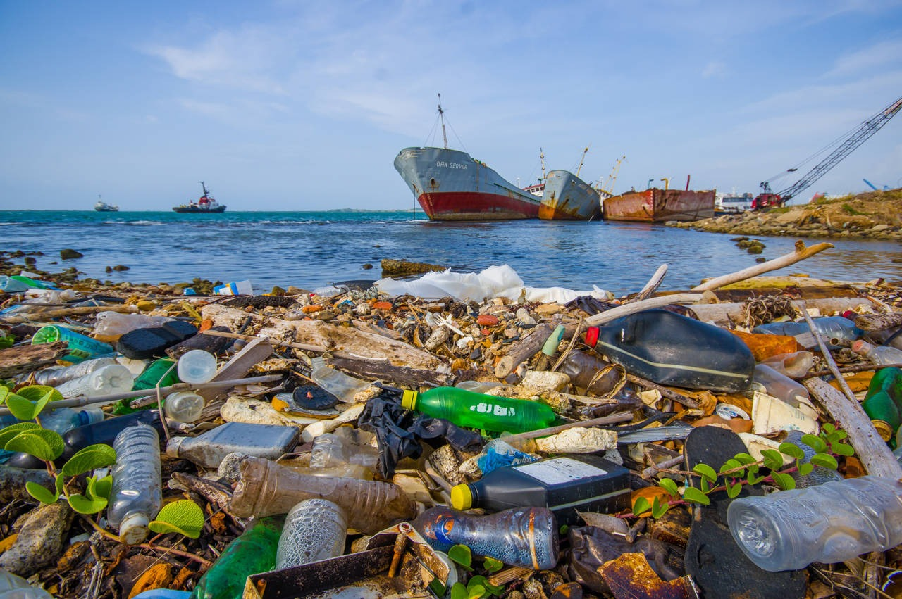
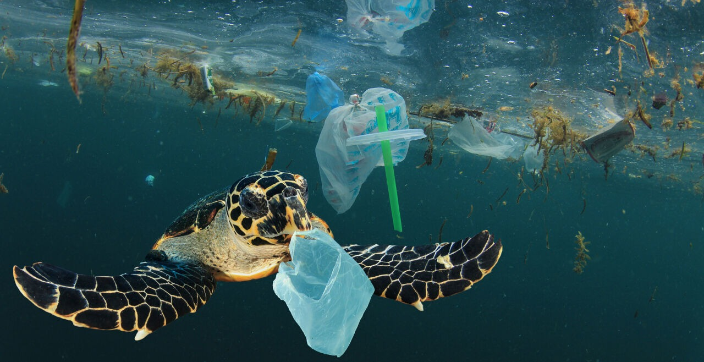
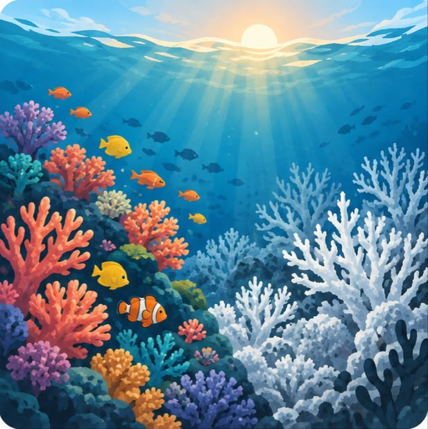
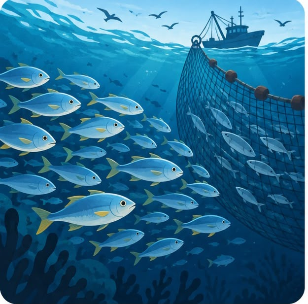
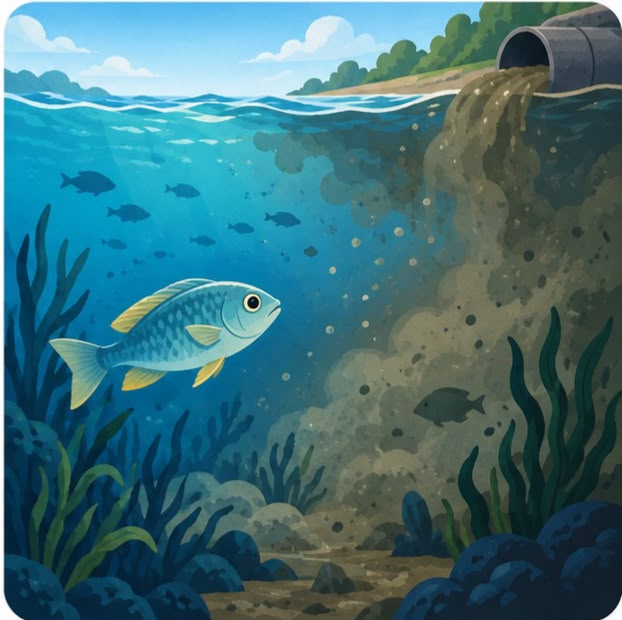

Contaminación por plásticos
Los residuos plásticos llegan al mar y afectan a peces, tortugas y otras especies.
Impacto: Daño a la vida marina.

Conocer las amenazas es el primer paso para proteger la vida marina.

El Caribe colombiano alberga ecosistemas esenciales como manglares, arrecifes de coral y pastos marinos. Sin embargo, diferentes actividades humanas ponen en riesgo su equilibrio y biodiversidad.
Los residuos plásticos llegan al mar y afectan a peces, tortugas y otras especies.
Impacto: Daño a la vida marina.

El aumento de la temperatura del océano afecta los corales y altera los ecosistemas marinos.
Impacto: Pérdida de biodiversidad.

La captura excesiva de especies reduce las poblaciones de peces y altera el equilibrio del océano.
Impacto: Agotamiento de especies.

Las aguas residuales y otros contaminantes llegan al mar y deterioran sus ecosistemas.
Impacto: Agua y hábitats afectados.
